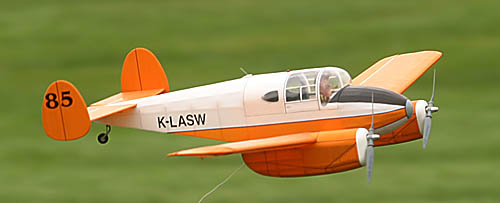
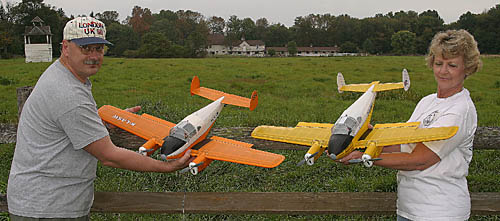

Klass Wings Miles M.65 Gemini

|
The full-scale M.65 Gemini was a delightful little twin built in England right after WWII. It was built entirely of spruce and plywood, and spanned 36 feet, 2 inches. Powered by a pair of 100 hp Blackburn Cirrus Minor II engines, the Gemini offered comfortable and efficient transportation for up to four people at a max cruise of 145 miles per hour. Full fuel range was approximately 1000 miles, making it a perfect ship for touring the British Isles and the Continent. 170 aircraft were built, with many still surviving.
This model was built from a short-lived laser cut kit designed and sold by Keith Sterner through his company, Klass Wings. It is powered with a pair of stock 7.2v Speed 400 motors turning Graupner's 6.5x4 scale propellers. While they look the part, these propellers were poorly balanced out of the mold. I used multiple layers of black sign vinyl on the backs of the blades to both balance them and relieve the pilot's eyes with an anti-reflective coating. With full apologies to the scale police, I dressed mine in an "undocumented" scheme using SIG Aerokote Lite. Assuming that this would be an ideal aircraft for a proper English gentleman to use for weekend touring with his lady, I tried to keep it tasteful, while still allowing that it might also go racing from time to time.
NEAT Fair 2005 I built my model in 2005 and had a great time flying loose formation with Keith at the NEAT Fair that fall. Originally I had great plans for plug-in landing gear to save the weight of retracts. Then I realized I fly almost exclusively off grass, and already have a lot of planes for touch and goes. The only major modification I made was to the rear turtledeck. I doubled the stringer count to get the spacing more in line with those on the nose. I also replaced the vacuum formed nose bowls with ones made from balsa, for a better fit and to use the same covering for a perfect color match. It is a shame that this kit is gone, but motivated builders will find that the plans remain available as #2105 from RC Sport Flyer and Kiona Publishing. For the time being, you can click here for a direct link to their plan offering. NEAT Fair 2018 Finally, some more flight photos! A special thanks to Terry Dunn for these two flight photos of the Gemini, taken 13 years after her first flight. I dusted her off for another appearance at the NEAT Fair, and logged a nice flight on Saturday afternoon. She has been idle for a few years, but showed her spirit again quite respectably. Indeed, once we made a lap or two, I was reminded why I like this model so much. It carves through turns beautifully, and looks great slipping by, as if running off above the British Isles for another weekend adventure, or making a quick jump across the channel to the continent. After every outing I muse that I really should fly the Gemini more, and wonder if a larger version, say around 60 inches, might even be that much better. But then I think about how elegantly simple this model is, and how easily it drops in the car. No question, Keith got this one just right.
|
| Wing Span: | . | 40 in. |
| Weight: | . | 20.6 oz. |
| Battery: | . | Kokam 4S 910mAh Li-Poly |
| Power: | . | 95 W/lb full throttle |
| Duration: | . | 20+ minutes |

I was fortunate to fly this Klass Wings prototype in the fall of 2004

Keith Sterner and his wife Annette show off the Klass Wings prototypes
One last parting shot by Walter Sidas
Copyright 2006-2018, Thayer Syme, All rights reserved